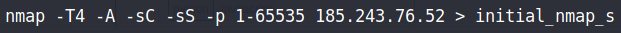

NMAP Initial Scan
Used
nmap
as an initial scan on the found IP adress of
armholding.ae
on all ports:
Flags used
:
-
Scan Speed (T4)
-
Aggressive (A)
-
Default nmap scripts (sC)
-
Stealth scan (sS)
> Directed output to file 'initial_nmap_scan':
Scan Summary:
PORT STATE SERVICE VERSION --------------------------------------------------------- 21/tcp open ftp Pure-FTPd
22/tcp closed ssh
# Hardedned to run on port 1941(?) 25/tcp open smtp?
# Couldnt establish connection. 53/tcp open domain ISC BIND 9.11.4-P2 (RedHat Enterprise Linux 7)
| dns-nsid:
|_ bind.version: 9.11.4-P2-RedHat-9.11.4-26.P2.el7_9.3
110/tcp open pop3 Dovecot pop3d
# Subject Alternative Name: DNS: armserver.drec.ae 143/tcp open imap Dovecot imapd
# Subject Alternative Name: DNS: armserver.drec.ae 443/tcp open ssl/http Apache httpd
# The port the server is running on (HTTPs) 465/tcp open ssl/smtp Exim smtpd 4.93
587/tcp open smtp Exim smtpd 4.93
# smtp not encrypted 993/tcp open imaps?
995/tcp open pop3s?
1941/tcp open ssh OpenSSH 7.4 (protocol 2.0)
Aggressive OS guesses: Actiontec MI424WR-GEN3I WAP (99%)
Device Type: WAP (Wireless Access Point)
OS CPE:
Type: Hardware
Vendor: actiontec
Product: mi424wr-gen3i
OS Running: Linux,
Edition: linux_kernel
OS Details: Actiontec MI424WR-GEN3I WAP
Conclusions:
- Possible attack vectors on variuos services running.